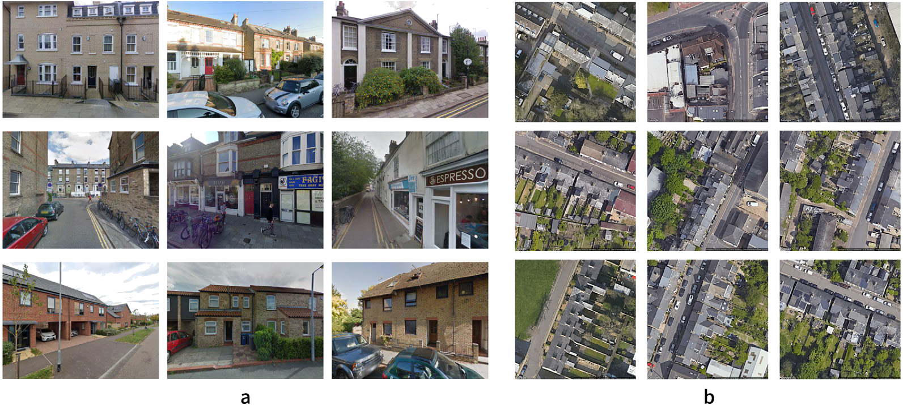
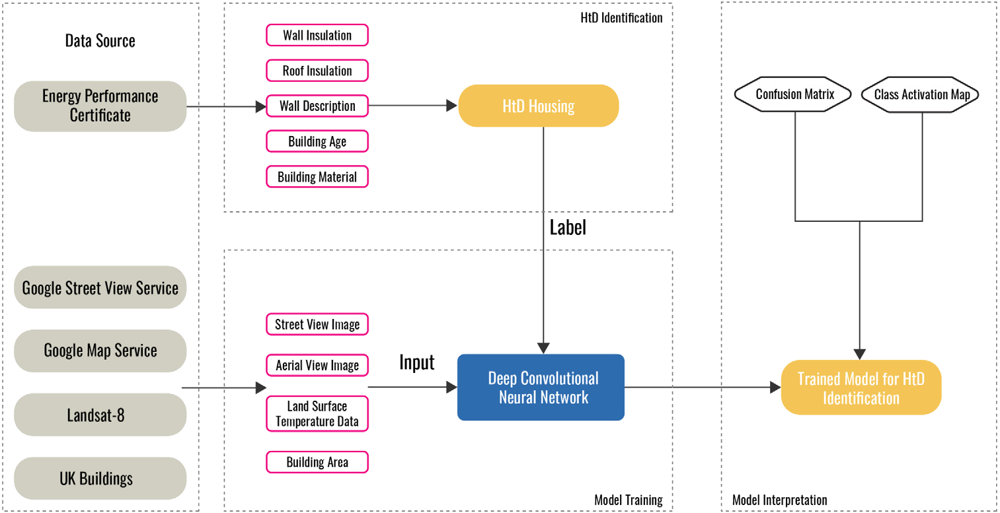
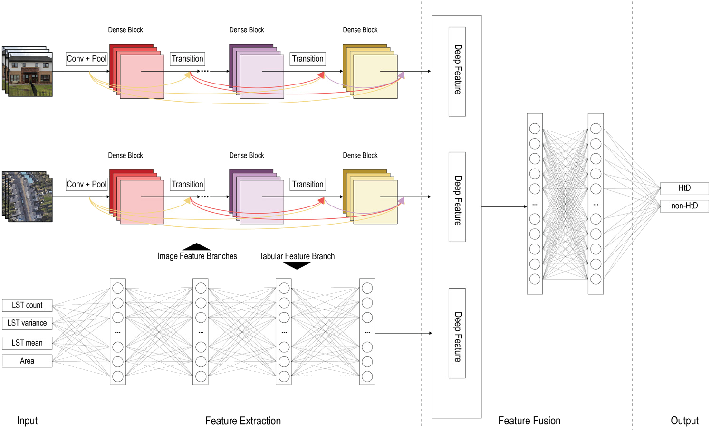
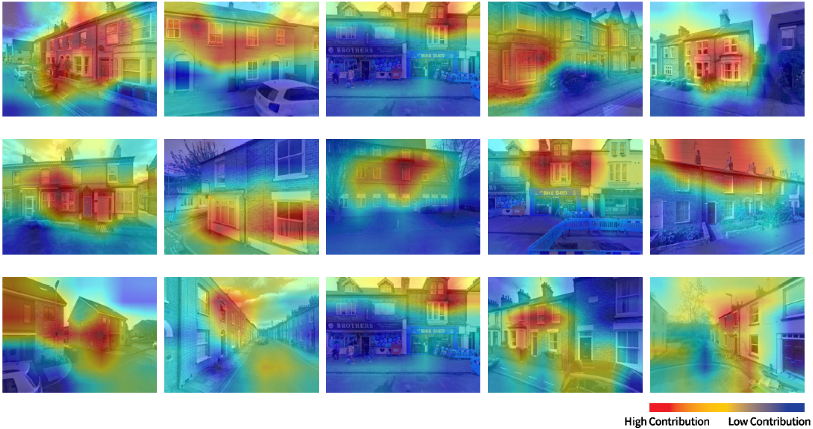

Five Billion New City Dwellers
By 2050, 80% of us will live in cities. Reaching net zero means decarbonizing the homes we already have — but the hardest-to-decarbonize quarter of them have been largely ignored.
Using street view, aerial imagery and deep learning to identify Hard-to-Decarbonize houses
across Cambridge, UK.
By 2050, 80% of us will live in cities. Reaching net zero means decarbonizing the homes we already have — but the hardest-to-decarbonize quarter of them have been largely ignored.


“Hard-to-Decarbonize” (HtD) houses are estimated to be a quarter of all homes globally — older, narrow-cavity, off-gas, single-glazed. Policy exists; identification doesn't. Without knowing where these homes are, retrofit money goes everywhere except where it is needed most.
We fuse four publicly available data sources into a single deep learning model: street view images (what a passer-by sees), aerial view images (the roofs and footprints), land surface temperature (where heat leaks), and basic building stock attributes (age, area). Each branch contributes its own signal; the network learns how to combine them.

Overall precision on 1,335 Cambridge houses — single-source ablation versus the full four-branch model.
Plotted from values reported in the paper text.
Class Activation Maps reveal where the model focuses its attention. Across the dataset, it consistently picks out roofs, chimneys, windows and facade materials — the same architectural cues a building surveyor would use. It ignores the pavement, the cars and the trees.

Each data source picks up different architectural cues. The model's Class Activation Maps reveal what it actually looks at.
Picks out windows, chimneys, facade material and ground-floor frontage — the same cues a surveyor would use during a doorstep visit.
Reads roof geometry, footprint and surroundings. Less rich than street view, but covers most of the globe — a credible first map for data-poor regions.
With publicly available imagery and a building register, deep learning can map a city's hardest-to-decarbonize homes — at building-level resolution, without door-to-door surveys.
Sun & Bardhan, 2024
Authors: Maoran Sun, Ronita Bardhan
Department of Architecture, University of Cambridge · Sustainable Cities and Society 100 (2024) 105015
Read Original Publication